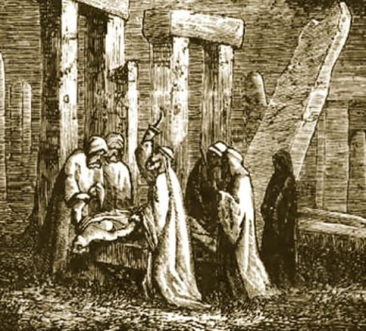

La fiesta de Halloween es de origen celta, quienes antiguamente celebran un festival conocido como Samhain, que podemos traducir al español como ‘fin del verano’, y que marcaba el fin de la temporada de cosechas y el año nuevo celta.
El Festival de Samhain era celebrado todos los años al final del mes de octubre, coincidiendo con el equinoccio de otoño.
Se decía que durante esta noche los espíritus (tanto buenos como malos) regresaban a visitar a los vivos, razón por la cual se creó un conjunto de rituales en torno a esta creencia.
De allí, por ejemplo, el uso de velas, que ayudan a los espíritus a encontrar el camino, o de disfraces, que permiten protegerse de los espíritus malignos.
Durante la Gran Hambruna (1845-49) en Irlanda, que en ese entonces formaba parte del Reino Unido de la Gran Bretaña e Irlanda, más de un millón de personas emigró a Estados Unidos.
Se llevaron consigo su historia y tradiciones, y no es coincidencia que las primeras menciones de Halloween en territorio estadounidense aparecieran poco después de ese éxodo.
En 1870, por ejemplo, una revista para mujeres publicó un artículo que describía Halloween como un "día festivo inglés".
